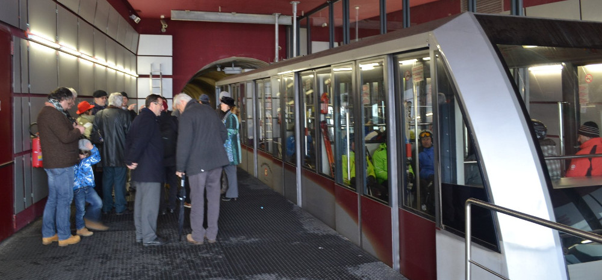

Tunnel – lieber klein, aber sofort
Jan 27, 2015
“Tunnel - lieber klein aber sofort!” unter diesem Titel habe ich 2004 eine Machbarkeitsstudie für ein effizientes und benutzerfreundliches Verkehrsmittel öffentlich vorgestellt. Dieses würde wesentlich dazu beitragen, die Verbindung nach Dorf Tirol und Schenna sowie ins Passeiertal zu verbessern und die Cavourstraße zu entlasten.
Der Vorschlag wurde und wird von den Verantwortlichen der Meraner Stadtverwaltung leider nur als Konkurrenzprojekt zum Straßentunnel durch die Stadt und den Küchelberg wahrgenommen und deshalb nicht ernsthaft diskutiert.
Dabei hat die Landesregierung deutlich zu verstehen gegeben, dass sie durchaus bereit wäre ein solches Projekt zu unterstützen. Ex-Landesrat Widmann hat ein eigenes Projekt ausarbeiten lassen (das jedoch auf breiten Widerstand der Bevölkerung gestoßen ist) und Landesrat Mussner wartet nur darauf, dass die Gemeinde Meran ihm sagt, was sie will.
Die Verantwortlichen in der Stadt und im Bezirk sind jedoch ausschließlich auf den Straßentunnel fixiert. Bis dieser nicht realisiert ist, wollen sie offensichtlich keine ernsthaften Maßnahmen ergreifen, um die Verkehrssituation zu verbessern.
Machbarkeitstudie von 2004: Sieht für die Anbindung von Dorf Tirol und Schenna ab Pulverlager eine kuppelbare Kabinenbahn vor.
Abgeänderte und erweiterte Sudie von 2006: Untersucht die Möglichkeit einer Verbindung vom Bahnhof bis ins Passeiertal. Für die Verbindung zwischen dem Ex-Pulverlager und Dorf Tirol wird hier ein Shuttle-Bus vorgeschlagen, weil nur dadurch das langgestreckte Dorf vollständig erschlossen werden kann.